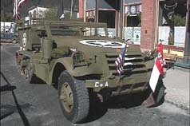
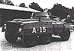

 Restored Half Track (Silverton, CO) The 82nd Armored Reconnaissance Battalion was activated as a part of the Second Armored Division, 15 July 1940, at Ft. Benning, Georgia. It was at that time called the 2nd Reconnaissance Battalion. The skeleton organization was made up of trained key personnel drawn from cavalry and reconnaissance units located throughout the United States. On 24 July 1940, the first cadre, consisting of 89 men, arrived from the 1st Reconnaissance Battalion, Fort Knox, Kentucky, a similar organization formed a few days previously from the 7th Cavalry Brigade. Eight men came from the 2nd Squadron, 3rd Cavalry, at Fort. Meyer, Va., and eight from the 1st Squadron, 3rd Cavalry, at Fort Allen, Vt. The 3rd Cavalry Regiment began its famous career in 1846, when it was formed as a " Regiment of the Mounted Riflemen". Through many campaigns the 3rd Cavalry has lived up to its motto, " Brave Rifles, Veterans, you have been baptized in fire and blood and come out steel"... the immortal words of General Winfield Scott after the battle of Chapaultepec. Twenty six men later arrived from the 2nd Cavalry at Fort Riley, Kansas. The 2nd, was one of the oldest cavalry in the United States Army, has a long and brilliant record dating back to 1836, when it was formed by an act of Congress as the 2nd Dragoons. Twenty-three men whose parent organization was the 11th Cavalry Regiment completed the cadre on 11 August 1901. The 11th Cavalry, formed at Fort Meyer, Virginia, distinguished itself in the Spanish-American war, and in General Pershing's punitive expedition against Mexico in 1914. Proud of its distinguished lineage, the 82nd Armored Reconnaissance Battalion, the "eyes and ears" of the Second Armored Division, has already added new battle honors to those handed down to it by its parent units. The 2nd Reconnaissance Battalion, formed from a cadre supplied by the 1st, 2nd, 3rd, 11th, 13th, and 14th Cavalry Regiments, was activated as an organic unit. Its first commanding officer was Major, later Major General) Isaac D. White, who as a brigadier general, commanded the division from 19 January 1945 to 8 June 1945. ( more on Gen. White in the Generals section) When the division was reorganized on 8 January 1942, following the Carolina maneuvers, the 2nd was redesignated the 82nd Armored Reconnaissance Battalion. During those maneuvers the battalion made national headlines by its first notable feat of arms-the capture of Lt. General Hugh A. Drum, CG of the First Army. An interesting point, most all of the generals to command the 2nd Armored Division were from the New England States. Three platoons of the 82nd were a part of the initial landing force which forced the capitulation of French North Africa. On 8 November 1942, one platoon of Co. "C" landed at Safi, with Combat Command "B" another platoon landed at Fedala, near Casablanca, with the 9th Infantry Division and a third landed at Mahdia Plage, near Port Lyautey, with the 3rd Infantry Division. The 82nd Armored Reconnaissance Battalion landed at Gela, Sicily on 11th July 1943. The battalion took a major part in the capture of Butera and the tank company participated in the battle of Mazzarino. The battalion reconnoitered in front of the division during the advance on Palermo, brushing aside the enemy road blocks at San Guisseppe Pass. On 22 July the attack on Palermo began with elements of the battalion covering the division's flank. After the capture of Palermo, the 82nd was a part of the Palermo Military District administering prisoners of war. On 9 June 1944, reinforced by Co. "D" of the 17th Armored Engineer Battalion, the battalion landed on Omaha Beach in Normandy as a part of Combat Command "A". During the St. Lo breakthrough in July 1944 the battalion was attached to Combat Command "B" and performed in an outstanding manner, pushing rapidly across Cherbourg peninsula to secure crossings over the Seine river. The 82nd with a tank company of the 67th Armored Regiment attached, took Domfront during the last part of the division's action against the German counterattack in the vicinity of Mortain, France. Company "A", 2nd Platoon, 82nd Reconnaissance closed the gap in the Ardennes to link the Ninth U.S. Army with the 11th Armored, from the 3rd U.S. Army. at 0900A, 16 Jan 1944 near Houffalize After engaging in numerous actions in the pursuit, on 2 September 1944, patrols of the 82nd crossed into Belgium near Tournai, 12 hours before any other American troops crossed the frontier.  In and round Hasselt, Belgium we refer you to Willy Alenus on the "Notables Generals & Others" page. His article tells the experience from someone that was there, also is a native of this area of Belgium.( in the early Sept 44 time frame ). After mopping up actions with Combat Command "A" in the vicinity of Maastricht, Holland the battalion defended the left of the bridgehead over the Maas River, near Sittard, Holland to enable Combat Command "B" to concentrate for the attack on the Siegfried line. The battalion took part in the penetration of the Siegfried line and Co. "D" was the nucleus of a task force operating on the Combat Command "B" left flank during the operations against Gereonsweiler. During the first phase of the "Battle of the Bulge" (Ardennes Offensive) in Belgium, the 82nd Reconnaissance Battalion, less one company and two platoons, was attached to Combat Command "A". One company of the battalion was with Combat Command "B". In the second phase of the battle in the Ardennes, the battalion was attached to Combat Command "A" and made contact with the Third Army sealing the "Bulge" near Houffalize. During the drive from the Roer River to the Rhine, the battalion protected the division left flank, maintaining contact with the 29th Infantry Division on the left. For operations from 3 April 1945 through 17 April 1945 during the sweep from the Rhine to the Elbe, the 82nd Reconnaissance Battalion received the Presidential Unit Citation. The operation consisted of slashing through the enemy's defenses for more than 250 miles, always far in advance of the main elements of the spearhead force. The advance was climaxed by a spectacular dash of 62 miles from Gross Manner to the Elbe River south of Magdeburg in eight hours. Aggressive movements of the widely separated companies of the battalion completely disrupted the enemy defenses and resulted in the killing of 1,000 enemy troops and the capture of 8,943 prisoners, the capture of and the destruction of large quantities of enemy equipment and the liberation of approximately 32,000 allied prisoners of war land slave laborers. From 7 May 1945 to 1 January 1946 the 82nd Reconnaissance Battalion performed occupational roles which included the initial occupation of Berlin. The battalion sailed from Calais on 21 January 1946 and arrived in Ft. Hood, Texas on 12 February 1946 where routine training and housekeeping duties were performed. On 22 November 1946, the battalion was deactivated and zeroed out thus ending, for a time, a unit which had gained glory and distinction during its short life.
Algeria-French Morocco (with
Arrowhead), Sicily (with Arrowhead), Normandy, Northern France, Ardennes Alsace,
Central Europe, Rhineland. Unit Decorations: Distinguished Unit
Streamer WESTPHALIANPLAINS Streamer Belgian Croix de Guere BELGIUM, Streamer Belgian Croix de Guerre, Ardennes, Fourragere in the colors of Belgian Croix de Guerre. The 82nd Reconnaissance Battalion was reactivated on 17 January 1949. The battalion received its cadre from the 66th & 67th Tank Battalion's and by August was ready for field training. The battalion successfully completed a tactical training test in December 1949, following which it acted as aggressor troops against other units of the division, and again distinguished itself by outstanding display of initiative, enthusiasm, and aggressiveness by all concerned. The battalion, with elements of Combat Command "B", sailed for its new assignment in the European Theatre of Operations from the port of embarkation at New Orleans, Louisiana , on 4 July 1951, landing at Bremerhaven, Germany, on 17 July 1951. Thus beginning the second tour of duty for the 82nd Reconnaissance Battalion in Germany. More on the history of the 82nd Dear Mr. Swonger. 1 have had an opportunity to view your web site and noticed the history of the 82nd Armored Reconnaissance Battalion. Perhaps you might be interested in the following which was taken from the ".Army Lineage Series, Armor-Cavalry, Part 1" by Mary Lee Stubbs and Stanley Russell Conner. Office of the Chief of Military History, United States Army, Washington, D. C . 1969. It appears that the 82nd was consolidated with the 1st" Battalion, 15th Armor and the battle honors earned by the 82nd are now carried by that unit. I do not know if you are familiar with the Combat Arms Regimental System (CARS) If you are not, the following (excerpted from the above listed book) might be helpful The decade following the Korean armistice was marked by two major reorganizations of U.S. Army divisions, both of which influenced the structure of armor units: First to come was the pentomic plan of 1957-59, then the Reorganization Objective Army Divisions (ROAD) plan of 1962-64 Concurrent with the division reorganizations, another major change having far-reaching effect upon the organization of most combat-type units was the Combat Arms Regimental System, or CARS Arrival of the atomic era with its new weapons and tactical doctrine had rendered the regiment, the traditional fighting unit of the Army obsolete--it was too large. Even during World War II armored regiments, except those of the 2"d and 3" Armored Divisions, were broken up to form separate battalions, and many old cavalry regiments had been dismembered to form new units. With approval of the CARS plan early in 1957, the old cavalry and armored regiments could be revived, at least in name, to continue their regimental histories The plan provided an average of approximately fifteen battalions that could be organized to perpetuate the lineage and honors of a single regiment. The regimental headquarters was placed under Department of the Army control, and the other regimental elements were used to form separate battalions or squadrons as needed. Within these battalions and squadrons the organic elements were new Parent regiments for use under CARS were carefully selected. Except for the 2nd, 3rd, 6th 11th and 14 Armored Cavalry regiments, the 1st through the 17th Cavalry regiments were included Armor parent regiments were the 32nd through the 35th, the 37th, 40th, 63rd, 64th, the 66th through the 70th, and the 72nd,73rd, 77th and 81st, A subsequent decision by the Department of the Army that CARS cavalry regiment would contain reconnaissance-type units instead of tank battalions caused the redesignation of three cavalry regiments-the 13th, 15th and 16th---as the 13th, 15th and 16th Armor. Not affected by this decision were those elements of the 5th, 7th and 8th Cavalry, assigned to the 1st Cavalry Division, which remained organized as infantry. When the CARS reorganization was completed, cavalry had 9 regiments and armor had 20 Elements of these parent regiments were organized in both the Regular Army and the Army Reserve Army National Guard parent regiments were selected from National Guard units 1st Battalion, . 15"th Armor LINEAGE Regular Army (Inactive) Constituted 2 February 1901 in the Regular Army as Troop A, 15th Cavalry Organized 1 March 1901 at Presidio of San Francisco California. Inactivated 18 October 1921 at Fort D. A Russell, Wyoming Activated 22 March 1942 at Fort Riley. Kansas, and redesignated as Troop A 15th Cavalry, Mechanized Reorganized and redesignated 12 March 1944 as Troop A, 15th Cavalry Reconnaissance Squadron, Mechanized Converted and redesignated 1 May 1946 as Troop A, 15th Constabulary Squadron Inactivated 20 December 1948 at Fussen, Germany. Activated 20 May 1949 at Weiden, Germany inactivated 15 December 1952 at Weiden, Germany. Redesignated 13 August 1954 as Company A, 15th Reconnaissance Battalion Redesignated 1 July 1957 as Headquarters and Headquarters Troop. 1st Reconnaissance Squadron, 15th Cavalry; concurrently, consolidated with Headquarters and Headquarters and Service Troop, 82d Reconnaissance Battalion (see annex), assigned to 2d Armored Division. and activated in Germany (concurrently, Companies A, B, and C, 82d Reconnaissance Battalion. redesignated as Troops A B, and C, 1st Reconnaissance Squadron, 15th Cavalry Troop D, 1" Reconnaissance Squadron, 15th Cavalry, concurrently constituted and activated) Redesignated 1 July 1963 as 1st Battalion, 15th Armor; concurrently, relieved from assignment to 2nd Armored Division, transferred (less personnel and equipment) from Fort Hood, Texas, to Korea, assigned to 1st Cavalry Division and reorganized. Transferred (less personnel and equipment) 1 July 1965 from Korea to Fort Benning. Georgia; concurrently, inactivated at Fort Benning, Georgia, and relieved from assignment to 1st Cavalry Division. ANNEX 2d Reconnaissance Battalion (Armored) constituted 15 July 1940 in the Regular Army. assigned to 2d Armored Division and activated at Fort Benning, Georgia. Redesignated 8 May 1941 as 82nd Reconnaissance Battalion (Armored), Redesignated 1 January 1942 as 82nd Armored Reconnaissance Battalion, Converted and redesignated 25 March 1946 as 82nd Cavalry Reconnaissance Squadron, Mechanized. Redesignated; 17 January 1949 as 82nd Reconnaissance Battalion. CAMPAIGN PARTICIPATION CREDIT (For 15th Armor) Philippine Insurrection *Mindano *Luzon 1902 *World War I Without inscription World War II *Algeria-French Morocco (with arrowhead) *Sicily (with arrowhead) *Normandv *Northern France *Rhineland *Airdennes-Alsace *Central Europe DECORATIONS *Presidential Unit Citation (Army). Streamer embroidered WESTPHALIAN PLAINS (82nd Armored Reconnaissance Battalion cited; WD GO 84, 1945). "Belgian Fourragere 1940 (82nd Armored Reconnaissance Battalion cited; DA GO 43, 1950) *Cited in the Order of the Day of the Belgian Army for action in BELGIUM *Cited in the Order of the Day of the Belgian Army for action in the ARDENNES The above Contributed by John P. Malay, Editor, "Hell on Wheels" Bulletin In a ceremony held at Ft. Hood, Texas on December 15, 1995, the colors of the 2nd Armored Division were cased and the colors of the 4th Infantry Division were unfurled over Texas soil for the first time in history. |
|